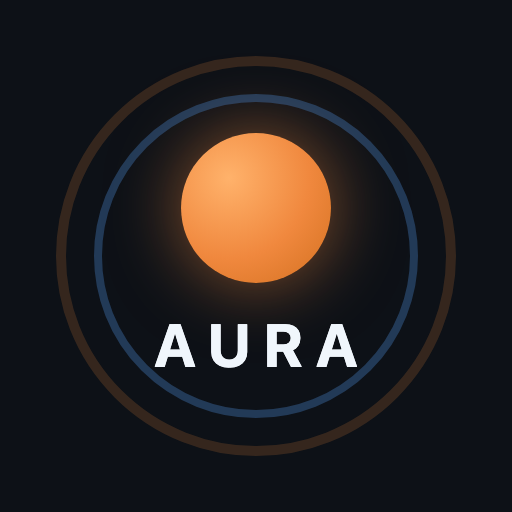
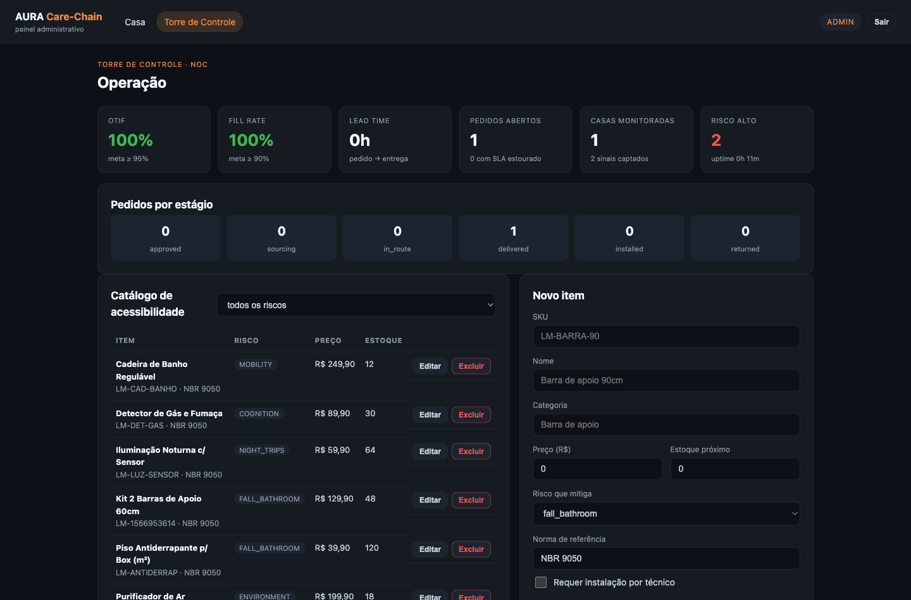
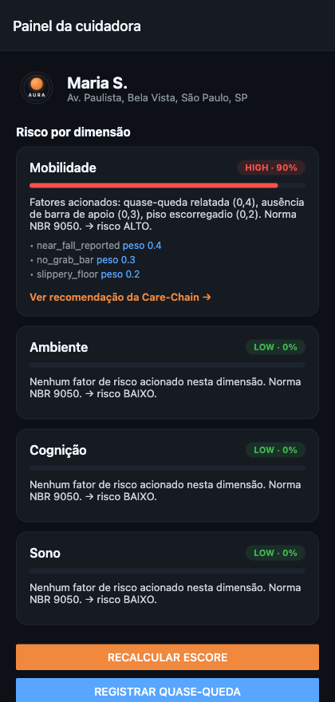
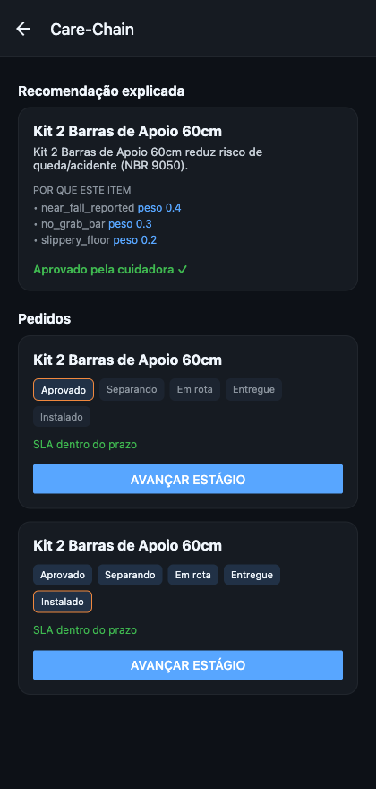
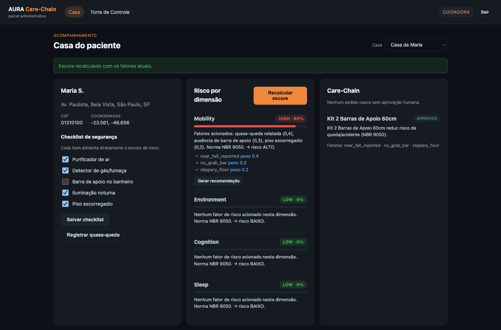

Fase 5 · Mobile Hybrid App e a Sociedade 5.0
Saúde domiciliar voice-first + cadeia logística de segurança da casa.
Agora com API própria em Spring Boot, painel Angular e app React Native.
Equipe
Onde estamos
| Fase | Entrega | Situação |
|---|---|---|
| 1 e 2 | Estratégia de serviço, processos e arquitetura | concluído |
| 3 | App nativo Android em Kotlin | concluído |
| 4 | Migração para Flutter · Care-Chain · mapas · Firebase · backend FastAPI | concluído |
| 5 — esta entrega | API Spring Boot · painel Angular · app React Native | agora |
| Próximas | Migrar rotas restantes, publicar em nuvem, observabilidade e testes com idosos | planejado |
Flutter, React Native e Angular consomem o mesmo /api/v1.
Trocar a stack de uma superfície não mexe nas outras.
Escore explicável, gate LGPD e aprovação humana estão no servidor — não dependem de qual app está na frente.
Parte 1 · escolha da stack
Opção B: o app Flutter seguiu evoluindo — validação inline nos
formulários de acesso e correção do detalhe do pedido, ambas com teste.
Opção A: o fluxo crítico recriado em React Native (login → risco explicado →
aprovação → entrega) como spike de avaliação da stack.
| Critério | Flutter | React Native |
|---|---|---|
| Voz e acessibilidade | pronto | reimplementar |
| Superfícies | Android · iOS · Web | Android · iOS · Web |
| Demo no navegador | build maior | segundos |
| Repertório do time | Dart exclusivo | TS do painel |
| Papel no produto | app principal | superfícies secundárias |
O app RN rodou contra a API sem nenhuma rota nova — prova prática de que a arquitetura não está acoplada à stack de UI.
Parte 2 · back-end
/api/v1web/ Controllers · DTOs · erro global service/ escore · Care-Chain · guardrails repository/ Spring Data JPA domain/ entidades · enums · conversores config/ Security (JWT) · OpenAPI · seed
postgres — mesmo código, um comando para demonstrar/swagger-ui.html e página de status em Thymeleaf{error:{code,message}} lido pelos três clientesParte 2 · regras de negócio
mobility:
factors:
- near_fall_reported 0.4 SIGNAL_EVENT
- no_grab_bar 0.3 CHECKLIST_ABSENT
- slippery_floor 0.2 CHECKLIST_PRESENT
Mudar a política de risco é editar YAML versionado, não recompilar. Auditável por quem não programa.
{ "level": "high", "score": 0.9,
"factors": ["near_fall_reported",
"no_grab_bar", "slippery_floor"],
"weights": [0.4, 0.3, 0.2],
"explanation": "Fatores acionados: quase-queda
relatada (0,4), ausência de barra de apoio (0,3),
piso escorregadio (0,2). NBR 9050. → risco ALTO." }
Parte 3 · web

/home — casa, checklist, risco explicado, Care-Chain e pedidos/admin — Torre de Controle e CRUD do catálogo{{ }} · [ ] · ( ) · [(ngModel)]*ngIf e *ngFor em listas e estados vaziosHttpClient + interceptor que injeta o JWTDemonstração

App React Native · risco por dimensão

Care-Chain · aprovação e linha do tempo

Painel Angular · mesma casa, mesmo escore
Impacto e roadmap
Tecnologia que previne a queda — a maior causa de internação de idosos no Brasil — em vez de apenas registrar o acidente. A decisão continua humana: o sistema explica, a cuidadora aprova.
| Migrar voz, medicação e realtime para o Spring Boot | próxima |
| Publicar a API em nuvem com PostgreSQL gerenciado | próxima |
| Observabilidade (Actuator + métricas) e CI/CD | próxima |
| Testes com idosos: SUS ≥ 70 e sucesso por tarefa ≥ 80% | próxima |
Obrigado
O cuidado que percebe o risco, explica e age — sem tirar a decisão de quem cuida.
github.com/AuraSmartHAS/aura
branch fase5 · backend-spring · web-admin · mobile-rn · mobile
«inserir link do YouTube (não listado)»
até 5 minutos, com o sistema rodando
./mvnw spring-boot:run
API + Swagger + dados de demonstração em um comando